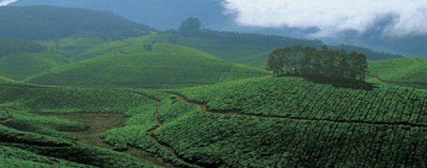
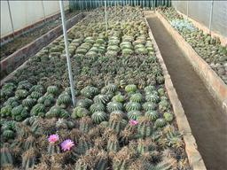

Tourism is the most significant contributor to Kalimpong's economy.The summer and spring seasons are the most popular with tourists, keeping many of town's residents employed directly and indirectly. The town—earlier an important trade post between India and Tibet—hopes to boost its economy after the reopening of the Nathu La (pass) in April 2006.Though this has resumed Indo–China border trades, it is expected that Kalimpong will have a better chance of revival as a hub for Indo–China trades if the demand of local leaders for reopening of Jelep La pass also is met. Kalimpong is a major ginger growing area of India. Kalimpong and the state of Sikkim together contribute 15 percent of ginger produced in India. The Darjeeling Himalayan hill region is internationally famous for its tea industry.However, most of the tea gardens are on the western side of Teesta river (towards the town of Darjeeling) and so tea gardens near Kalimpong contribute only 4 percent of total tea production of the region. In Kalimpong division, 90 percent of land is cultivable but only 10 percent is used for tea production. Kalimpong is well known for its flower export industry—especially for its wide array of indigenous orchids and gladioli. Kalimpong is well renowned for its cheese, noodles and lollipops. Kalimpong exports a wide range of traditional handicrafts, wood-carvings, embroidered items, bags and purses with tapestry work, copper ware, scrolls, Tibetan jewellery and artifacts.
  Next>>